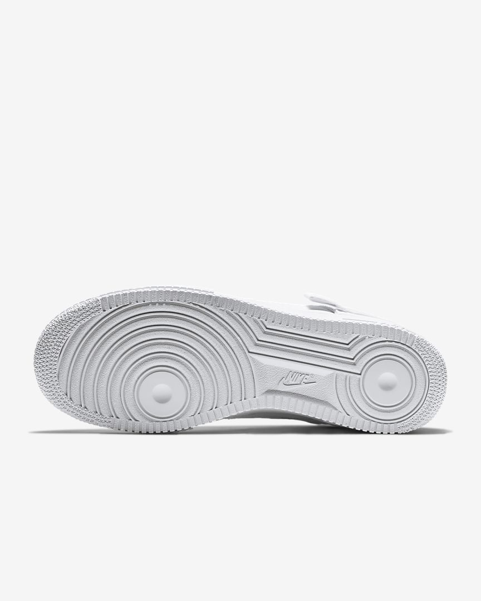
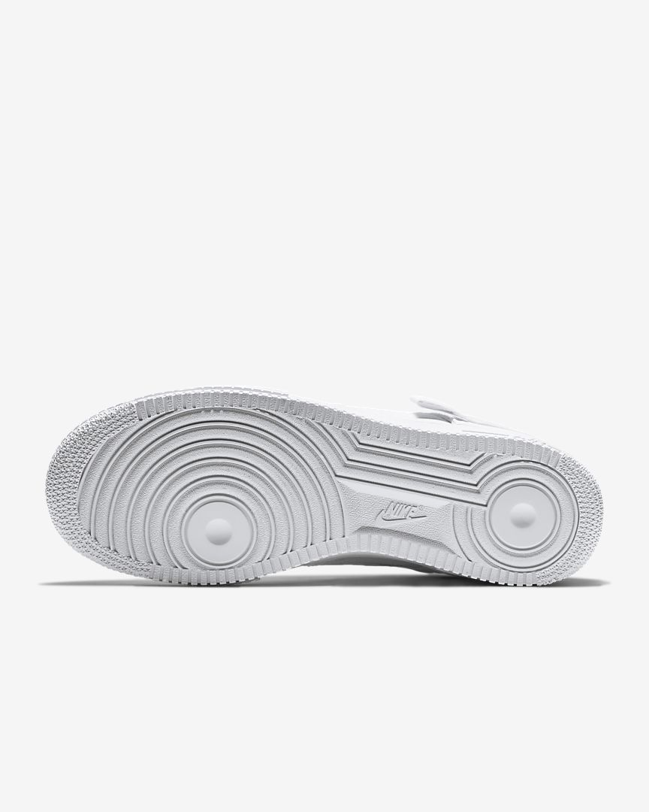

Der Nike Air Force 1 Type verleiht einem legendären Look handgefertigte Akzente. Er hat ein Verschlusssystem um die Ferse, das dem OG Hghtop Tribut zollt.Dazu kommen Überzüge aus Gummi im Zehenbereich, damit du in eine neue Dimension des AF1-Styles eintreten kannst.
Ein eng anliegender Innenschuh und ein verstellbarer Riemen Flywire-Fasern sorgen für eine fußumschließende, stützende Passform.Handschriftliche Logos, einzigartige Überzüge und sichtbare Nähte sorgen für eine handwerkliche Ästhetik. Der extragroße Zehenbereich aus Gummi hat ein geometrisches Muster, das von den technischen Handbüchern, die in den 70er- und 80er-Jahren in den Schuhkartons zu finden waren, inspiriert wurde. Die Nike Air Dämpfung und die Schaumstoff-Mittelsohle gewährleisten weichen Tragekomfort.